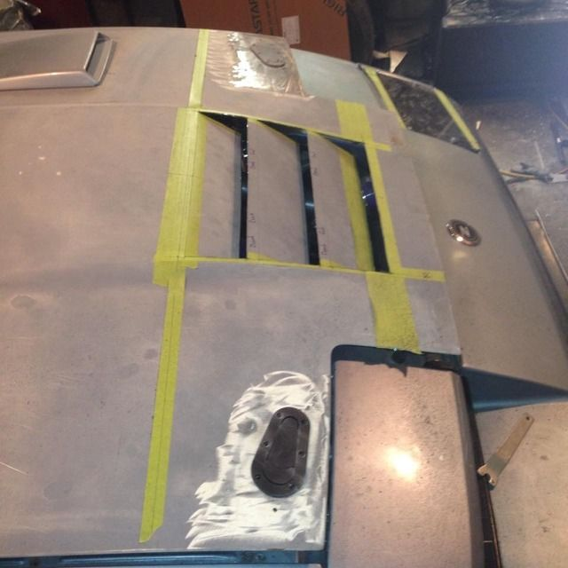

-
[quote]CoJoZ31 wrote: [quote=StreetFighter]actually wind tunnels have been around since the late 1800's. The wright brothers used one for there plane. hell the Germans during the end of WW2 had one that was capable of producing wind speeds in excess of mach 4!!Originally posted by New 2 Z -
Put some paint on my fenders.

"Beer is proof that god wants us to be happy" - Benjamin Franklin -
any reason why you didn't center the vents on the fender rather than have them closer to the outer edge? -
Unibody underneath it.
"Beer is proof that god wants us to be happy" - Benjamin Franklin -
:-( cant say i like the application.
i mean it looks really well done and clean… but i would have just made them really thin to accomodate the design of the unibody underneath.
nice work though. looks pro. -
I hear what you're saying, if I made them thinner on the outside and centered it they would only be like 1 cm wide and it would have just looked foolish. It doesn't look as weird with them being off center in person.
"Beer is proof that god wants us to be happy" - Benjamin Franklin -
hello,
can anyone send me pic's and explain how i need to fit the 280zx air vent into the hood of a 300zx turbo 1988 model
i saw pictures of it but i need to know of reinforcement of the hood , how to cut and install it properly
thanks,
danny
z club belgium ( europe )
[attachment=0:39ssuwm2]IMG_0671.JPG[/attachment:39ssuwm2] -
Take a look at my pictures on the previous page of this thread. I cut the mounting part out of the 280zx hood, trimmed it about a centimeter out from the lip the vent sits in and cut a hole in my hood slightly smaller than the part from the 280. I then welded the 280 piece to my hood and used a little filler to blend it in after grinding. After it was welded in, I test fit the vent while slowly removing the least amount of the bracing i could. I still need to go in and cut some more pieces and reinforce/box in the reinforcement where I cut it.
Some other people just cut a hole in their hood and bond the vent directly to it and mold it in. This didn't seem like a great option to me as I've seen this method used on other vehicles/vents and they all eventually cracked somewhere due to the flexing nature of the a hood and dissimilar materials. Using this method on any other panel would probably be ok though.
"Beer is proof that god wants us to be happy" - Benjamin Franklin -
So where could I get my hands on one of the hoods mentioned on page 4? (the one on the white Z would be incredible)Kira-1988 N/A T-Top- Turbo soon
Naomi-1984 N/A Slicktop R.I.P.-stolen
1976 Chevy Camaro R.I.P.- Custom candycane rods -
Proudear will be your best bet. They make the reverse cowl in both CF and FPRNizmoZ31 wrote: So where could I get my hands on one of the hoods mentioned on page 4? (the one on the white Z would be incredible)86na - BlueZ
Shiro #366 - Kouki Monster
85t - Mr Tickles -
saving this thread
Built a Street fighter drop Vent
Each louvre is 100mm long with 20mm between louvers. If anybody is interested i can provide more measurements.

I also have a template for Aerocatch's in the approximated location of streetfighters bonnet pins85 Turbo Slick Top
__________________________________________________ _____ -
James,
Looks good
Did you leave 20mm of matial (flat spot on the louvers)?
I have a spare hood for my 86 that I was thinking about getting creative with.86na - BlueZ
Shiro #366 - Kouki Monster
85t - Mr Tickles -
Yup each louvre has 20mm on it so rather than cutting all the way through you can cut 3 sides then just fold it down85 Turbo Slick Top
__________________________________________________ _____

Copyright © 2006–. All rights reserved. Privacy Policy